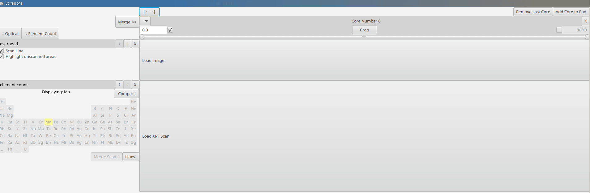
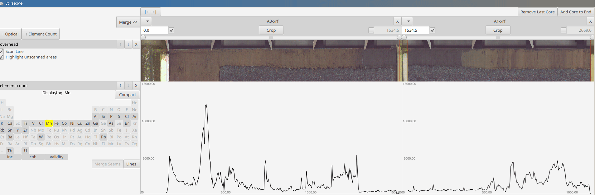
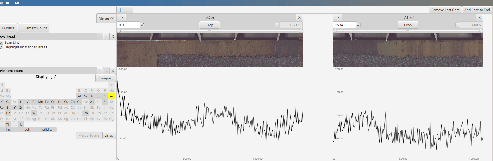
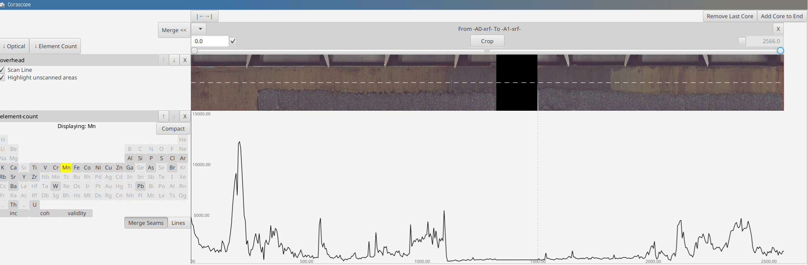

Corascope: Quick Start
Table of Contents
 Loading
Loading
 Load data by:
- clicking on the Load buttons
- dragging and dropping data into empty area
Add new cores to load additional data by clicking on the upper right button
 Cropping
Cropping

Select elements like Argon to see areas of bad data
Use the sliders to select areas with no/useless data. Then click Crop to remove them
To autoselect areas with no XRF data, right click on the Crop button
 Merging
Merging

Once cores are cleaned up, adjust their positions by changing the start position (hit Enter for value to take effect)
Once all cores are layed out properly, hit Merge to glue them into one core
Saving
 Once all the cores have been merged, go into the core menu (upper left corner) and save the image/xrf data to disk